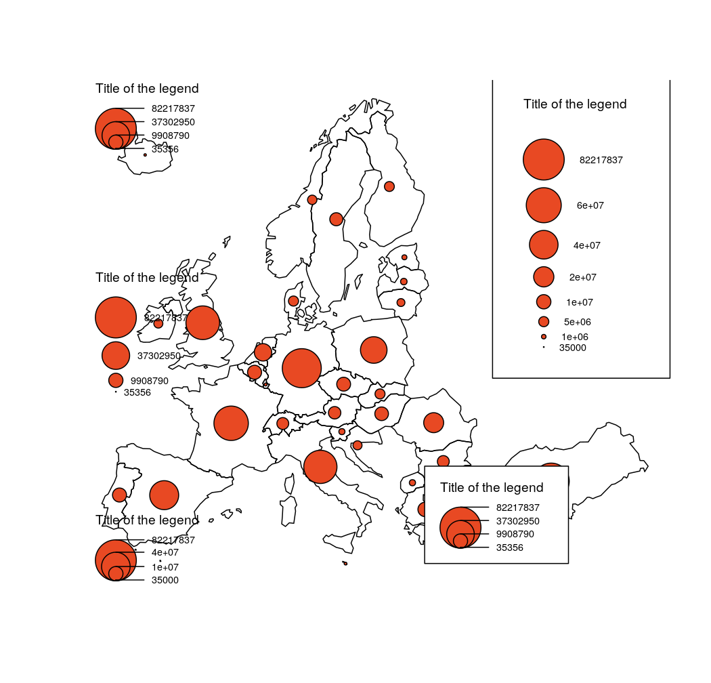

Plot legend for proportional circles maps
legendCirclesSymbols(
pos = "topleft",
title.txt = "Title of the legend",
title.cex = 0.8,
cex = 1,
border = "black",
lwd = 1,
values.cex = 0.6,
var,
inches,
col = "#E84923",
frame = FALSE,
values.rnd = 0,
style = "c"
)position of the legend, one of "topleft", "top", "topright", "right", "bottomright", "bottom", "bottomleft", "bottomleftextra", "left" or a vector of two coordinates in map units (c(x, y)).
title of the legend.
size of the legend title.
size of the legend. 2 means two times bigger.
color of the borders.
width of the borders.
size of the values in the legend.
vector of values (at least min and max).
radii of the biggest circle.
color of symbols.
whether to add a frame to the legend (TRUE) or not (FALSE).
number of decimal places of the values in the legend.
either "c" or "e". The legend has two display styles, "c" stands for compact and "e" for extended.
library(sf)
mtq <- st_read(system.file("gpkg/mtq.gpkg", package="cartography"))
#> Reading layer `mtq' from data source
#> `/tmp/RtmpRssvYW/temp_libpath10c7aeccd44/cartography/gpkg/mtq.gpkg'
#> using driver `GPKG'
#> Simple feature collection with 34 features and 7 fields
#> Geometry type: MULTIPOLYGON
#> Dimension: XY
#> Bounding box: xmin: 690574 ymin: 1592536 xmax: 735940.2 ymax: 1645660
#> Projected CRS: WGS 84 / UTM zone 20N
plot(st_geometry(mtq))
box()
propSymbolsLayer(x = mtq, var = "POP",
inches = 0.2, legend.pos = "n")
legendCirclesSymbols(pos = "topleft", inches = 0.2,
var = c(min(mtq$POP), max(mtq$POP)))
legendCirclesSymbols(pos = "left",
var = c(min(mtq$POP), max(mtq$POP)),
inches = 0.2, style = "e")
legendCirclesSymbols(pos = "bottomleft",
var = c(600, 12000, 40000, max(mtq$POP)),
inches = 0.2, style = "c")
legendCirclesSymbols(pos = "topright", cex = 2,
var = c(600, 30000,max(mtq$POP)),
inches = 0.2, style = "e", frame = TRUE)
legendCirclesSymbols(pos = c(736164.4, 1596658),
var = c(min(mtq$POP),max(mtq$POP)),
inches = 0.2, frame = TRUE)
